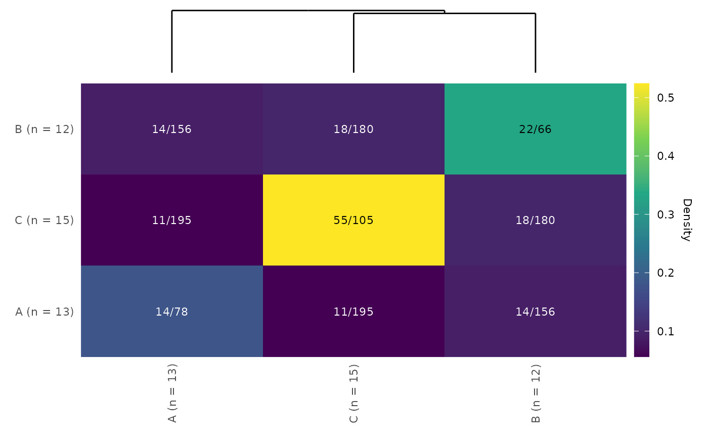

Plots ringbauer measures as a heatmap of edge densities, with groups
ordered by hierarchical clustering (distance = 1 - density) and the
dendrogram drawn above. Based on the Ringbauer paper and the layout of
gplots::heatmap.2().
Usage
plot_ringbauer(
RM,
abbr = FALSE,
addSize = FALSE,
addPercent = FALSE,
label_size = 3,
show_dendrogram = TRUE
)Arguments
- RM
a ringbauer measure tibble from
get_ringbauer_measures(). The list of matrices fromconvert_ringbauer_measures()is also accepted, for backward compatibility; in that caseabbr,addSizeandaddPercentare ignored, as the labels are already made.- abbr
a boolean that when true will shorten the group names
- addSize
adds size to group labels
- addPercent
add percent to labels
- label_size
size of the cell labels, in mm (as in
ggplot2::geom_text()). The row and column labels and the legend text are set to the same size.- show_dendrogram
if
TRUE, draw the dendrogram above the heatmap
Value
a ggplot, or a patchwork if show_dendrogram = TRUE; either can
be modified further, e.g. with & ggplot2::theme(...)
Examples
get_ringbauer_measures(example_network, "site") |>
plot_ringbauer(addSize = TRUE)
